Trusted By
Organizations I've Worked With
 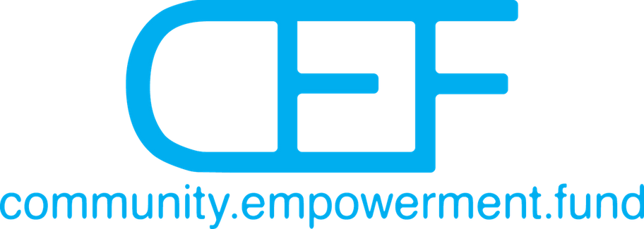
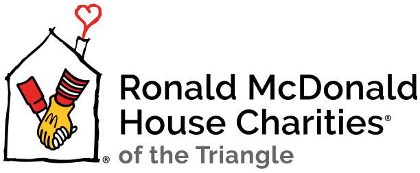
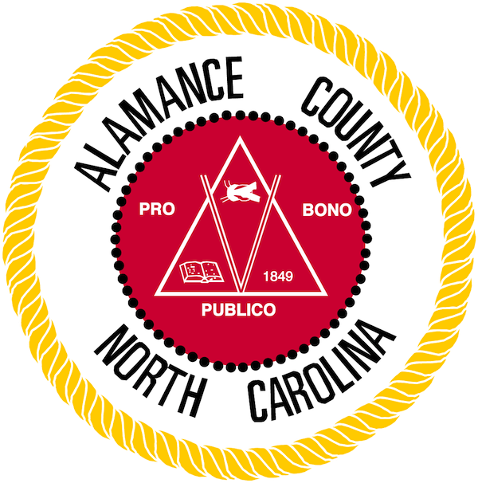
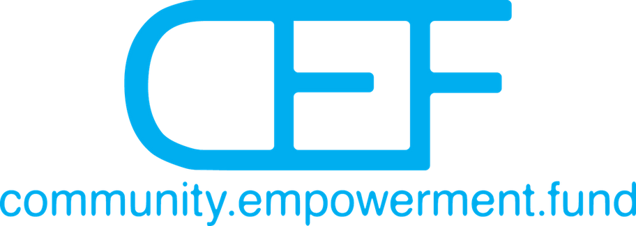
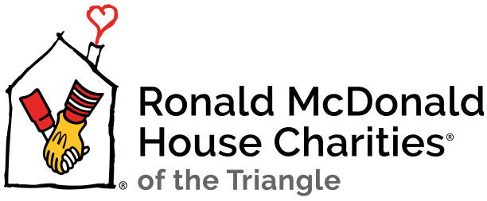
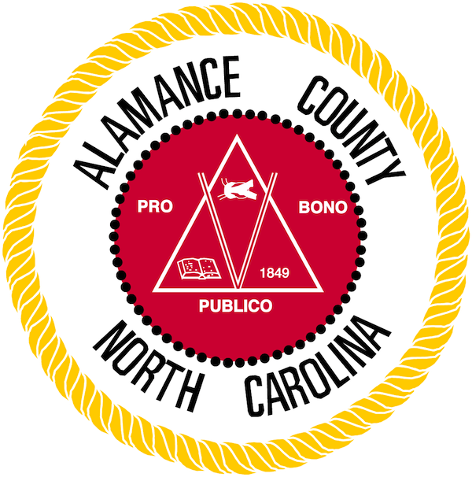
 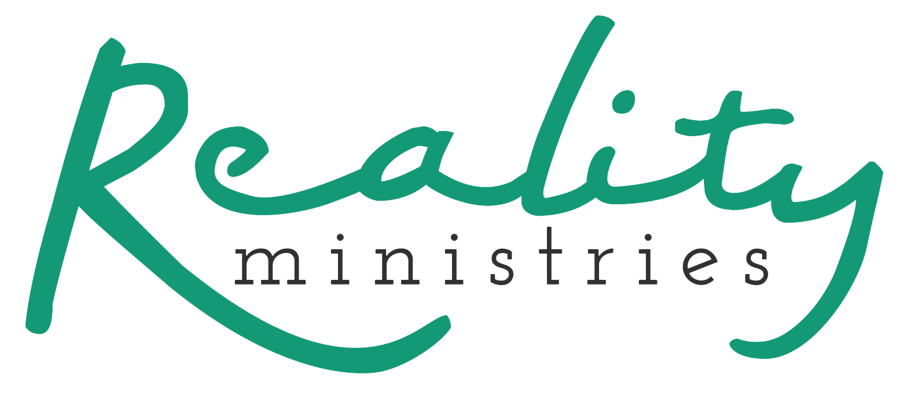
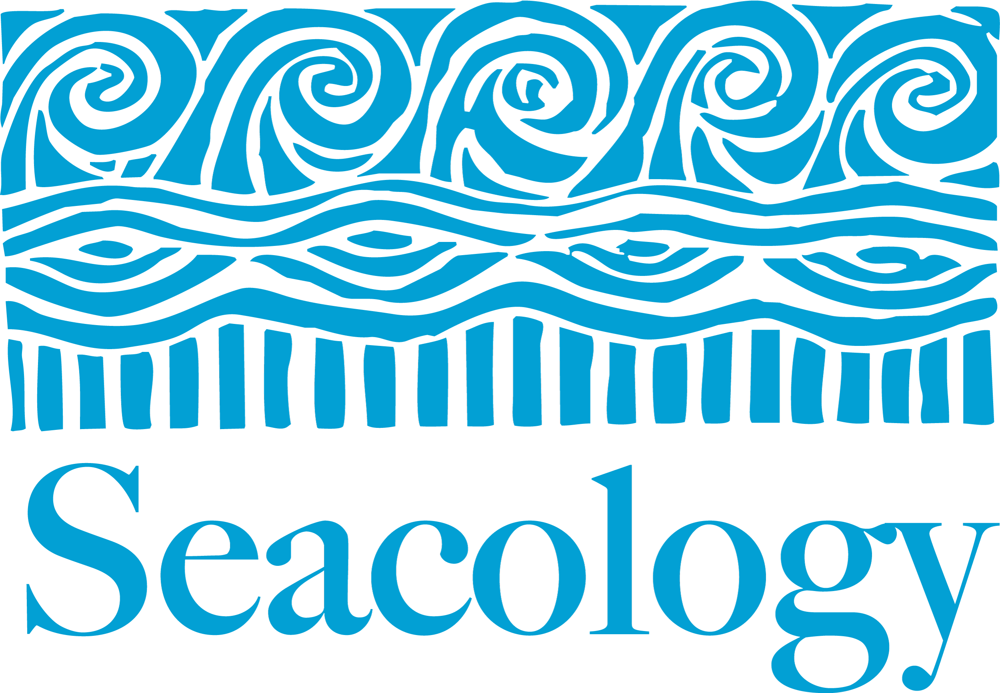
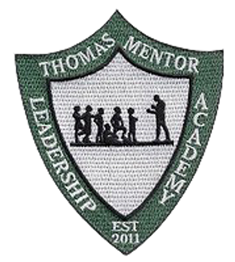
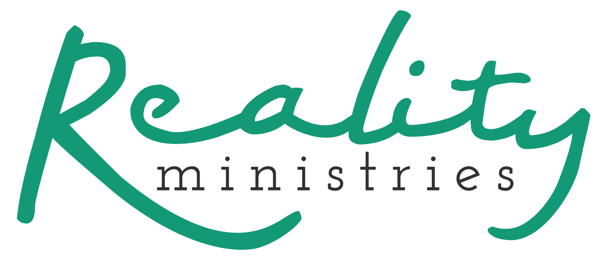
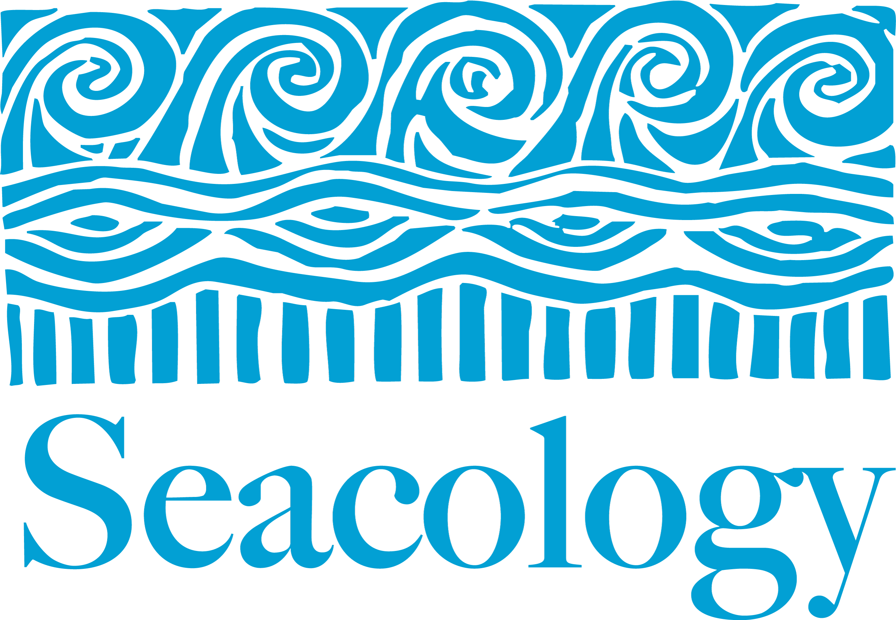
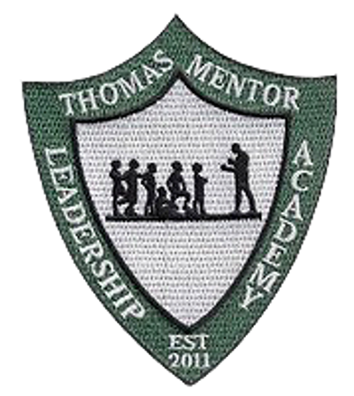
With over 18 years of experience in grant writing and nonprofit development, I partner with organizations to tell their stories and secure the funding they need to make a difference. From foundation and corporate grants to local government and federal sources, I support nonprofits at every stage of the grant pipeline.
I bring a detail-oriented, responsive, and creative approach to every engagement — whether it's a full grant proposal, strategic planning, prospect research, or reporting. My background spans general support, new programs, capacity building, and capital campaigns across sectors including healthcare, housing, education, conservation, and community empowerment.
A Williams College graduate based in Durham, North Carolina, I've worked with organizations across the country and bring both the rigor and the heart that effective grantwriting demands.
Comprehensive grant management including prospect research, budget development, evaluation tools, proposals, reports, and deadline tracking. I handle the full lifecycle so you can focus on your mission.
Expert consultation for organizations managing grants internally. I offer proposal editing, content creation for new projects, and process guidance to strengthen your approach and increase success rates.
Funding identification for organizations launching major initiatives. I identify private and public funders aligned with your mission, giving you a clear roadmap to pursue the right opportunities.
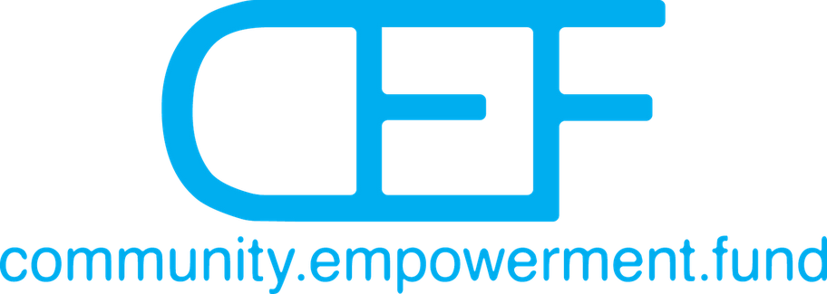
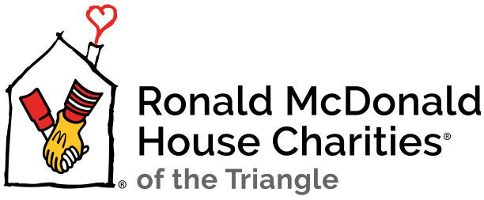
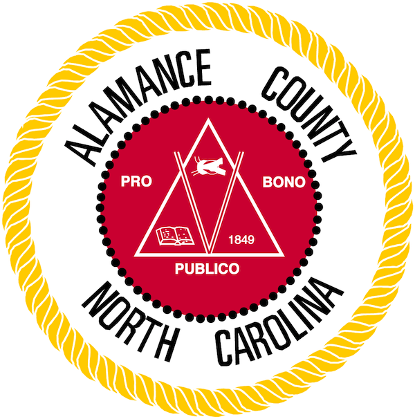
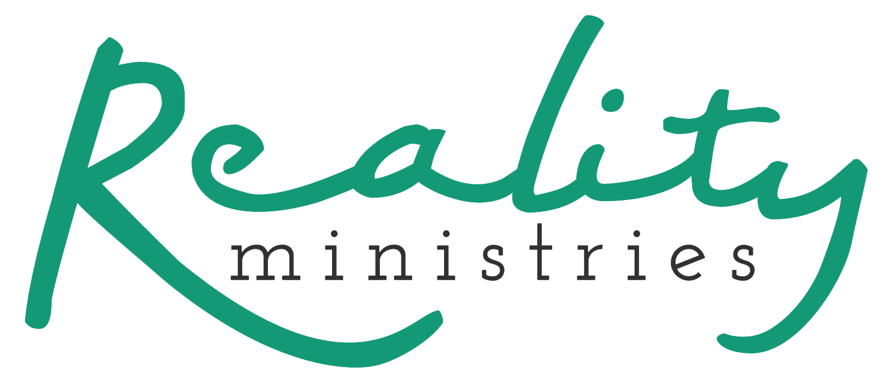
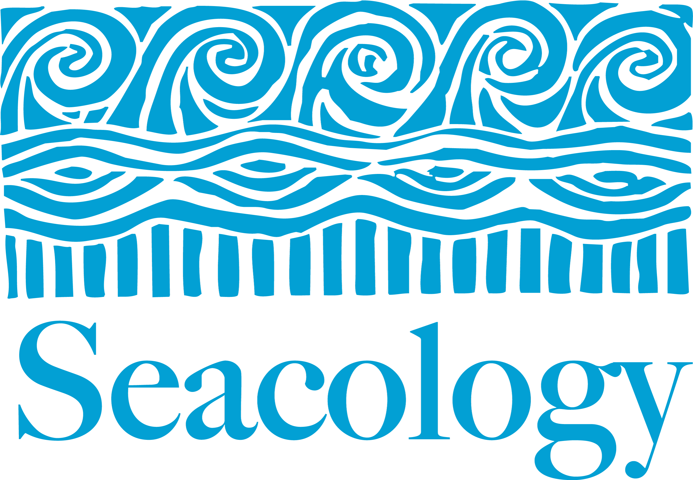
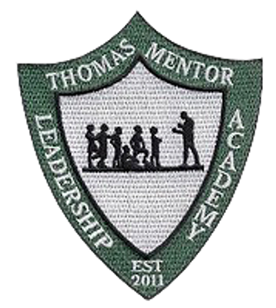
“Working with Carynne has been monumental for our organization. Her attention to detail, responsiveness, and creativity has made a world of difference in our grants program. She provides excellent work and is also always available to answer questions and truly values moments to teach us and pass on her skills.”
— Liz Snyder, Executive Director, Ronald McDonald House of Chapel Hill
“Carynne has been an integral part of the success of our grantwriting efforts. Her attention to detail and her tenacity in keeping us on task have translated into concrete positive results. She understands the mission as well as the financials, enabling us to tell our story meaningfully and accurately to potential funders.”
— Suzi Bevacqua, Assistant Director, The Green Chair Project
“Carynne's work with CEF has been vital to sustaining our growth. She communicates our complex, nontraditional programs in clear terms. In addition to being very responsive and conscientious, she has also been a valuable partner in strategy, and helped to streamline and improve our processes. Her support enabled CEF to secure our largest three funding opportunities in just the past two years.”
— Janet Xiao, Co-Director, Community Empowerment Fund
“I'm so grateful to have had the chance to work with Carynne. She listens well, grasps the essence of programs, and is able to communicate their value to funders in language they understand. In work where people with big hearts are sometimes short on details, Carynne's attention to the entire process is invaluable.”
— Jonathan Wilson-Hartgrove, Founder, School for Conversion
Self-employed · Durham, NC
School for Conversion · Durham, NC
Go Global NC · RTP, NC
Seacology · Berkeley, CA
Oceana · Washington, DC • Williams College Development Office · Williamstown, MA
Bachelor of Arts in English, Cum Laude